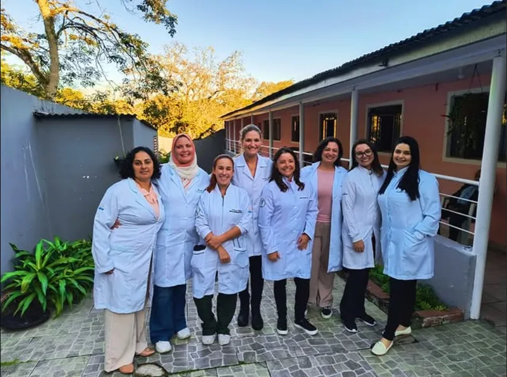
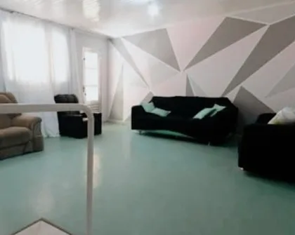
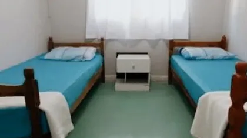
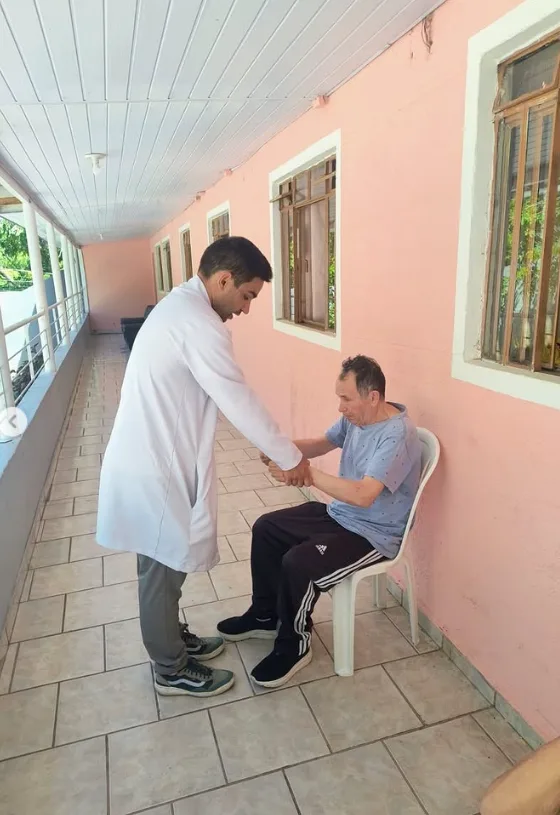
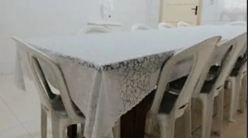
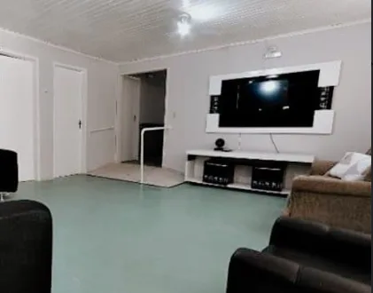
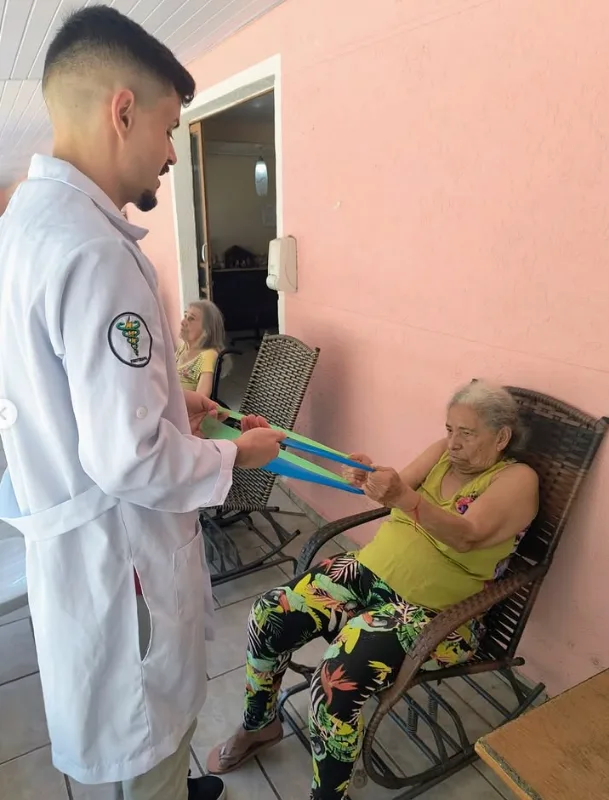
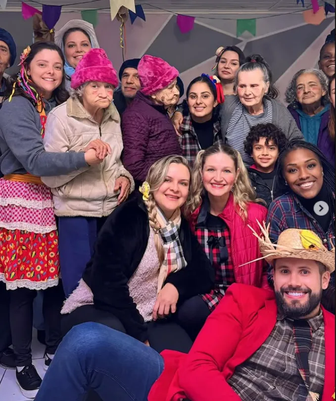

Casa de Repouso · Santa Cândida
Casa de Repouso Vó Nete
Uma casa acolhedora numa rua tranquila do Santa Cândida, para homens e mulheres, com cuidado 24 horas e uma equipe multiprofissional.


A casa
Estrutura adaptada, pensada para o dia a dia
A Vó Nete tem estrutura adaptada e acolhedora para receber bem os moradores. A varanda comprida é espaço de convivência e também de fisioterapia.
- Quartos duplos
- Banheiros coletivos, masculino e feminino
- Sala de televisão
- Varanda
- Refeitório amplo
- Rua tranquila, longe do movimento
Os ambientes
Por dentro da Vó Nete







A rotina
Uma equipe multiprofissional todos os dias
O objetivo é manter a vitalidade física e mental de cada morador, com acompanhamento de perto e atividades todos os dias.
- Nutricionista, com cardápio variado para 6 refeições diárias e avaliações físicas mensais
- Fisioterapia
- Educadora física, com atividades de motricidade, recreação e lazer
- Exercícios terapêuticos em grupo e yoga
- Musicoterapia
- Cuidadoras 24 horas

Convivência
Datas especiais são comemoradas em família
Festa junina, carnaval e outras datas especiais viram encontro entre moradores, famílias e equipe, com música, fantasia e muita alegria.
“Todas as cuidadoras são muito profissionais e cuidam dos nossos como sendo de suas famílias.”Luiz Gustavo Pereira, no Google
Onde estamos
Rua Joaquim Marques dos Santos, 206
Santa Cândida, Curitiba, CEP 82710-172
O mapa é carregado do Google Maps, que pode usar cookies próprios.
Abrir no Google Maps